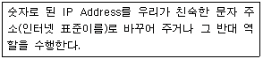
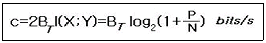
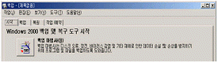
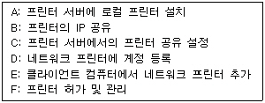

네트워크관리사-2급 (2009-10-18 기출문제)
1과목: TCP/IP
1. 인터넷 그룹 관리 프로토콜로 컴퓨터가 멀티캐스트 그룹을 인근의 라우터들에게 알리는 수단을 제공하는 인터넷 프로토콜은?
- ICMP
- IGMP
- EGP
- IGP
(정답률: 83%)

2. TCP/IP 프로토콜 계층 모델에서 최상위 계층은?
- 네트워크 계층
- 응용 계층
- 인터넷 계층
- 전송 계층
(정답률: 86%)
3. IP에서 사용되는 전송 형태에 대한 설명으로 옳지 않은 것은?
- 유니 캐스트 - 단일 송신자와 단일 수신자간의 통신
- 멀티 캐스트 - 통신이 가능한 모든 곳으로 패킷을 전송
- 애니 캐스트 - 어떤 송신자와 가장 가까이 있는 수신자 그룹간의 통신
- 브로드 캐스트 - 그룹의 모든 구성원들에게 정보를 일방적으로 전송
(정답률: 64%)
4. 목적지 주소에 대하여 라우팅경로를 추적할 때 사용되는 명령어는?
- route
- tracert
- netstat
- nslookup
(정답률: 72%)
5. IPv6는 IPng(IP next generation), 차세대 인터넷 프로토콜이라고 불리고 있다. IPv6 주소 필드 bit 수는?
- 32bit
- 64bit
- 128bit
- 256bit
(정답률: 88%)
6. "C Class" 네트워크에서 유효한 IP Address는?
- 33.114.17.24
- 199.46.263.25
- 202.67.13.87
- 229.23.94.3
(정답률: 75%)
7. “B Class” 네트워크에서 한 서브넷 당 사용할 수 있는 호스트의 개수를 최대한 확보하면서 6개의 서브넷이 필요할 때 올바른 서브넷 마스크는?
- 255.255.192.0
- 255.255.224.0
- 255.255.240.0
- 255.255.248.0
(정답률: 63%)
8. 정적 라우팅과 동적 라우팅에 관한 설명으로 옳지 않은 것은?
- 정적 라우터는 라우팅 테이블을 직접 작성하고 갱신해야 한다.
- 동적 라우팅 프로토콜은 라우터 사이에서 정기적으로 라우팅 정보를 교환한다.
- 정적 라우팅의 대표적인 예는 RIP와 OSPF 이다.
- 일반적으로 규모가 큰 네트워크에서는 동적 라우팅을 사용한다.
(정답률: 69%)
9. IP에 대한 설명 중 올바른 것은?
- 브로드 캐스트와 멀티 캐스트는 하나의 메시지를 복수의 수신자에게 전송한다.
- OSI 7 Layer 중 트랜스포트 계층의 주요 프로토콜이다.
- IP Address는 24bit 숫자로 표현한다.
- 브로드 캐스트는 Repeater를 경유하지 못한다.
(정답률: 66%)
10. Bluetooth 기술에 대한 설명으로 올바른 것은?
- 주파수 호핑 속도가 빠른 DSSS(Direct Sequence Spread Spectrum)을 사용하여 간섭에 강하다는 점이다.
- 1대의 Master가 7대 까지의 Slave를 연결하는 피코넷(Piconet)으로 구성되어 있다.
- 주요 통신방식은 FDD(Frequency Division Duplex) 방식을 사용한다.
- 부품의 전력 소모량이 크고, 그 부피도 큰 편이므로 소형 모바일 기기에 내장시키기에는 적합하지 않다.
(정답률: 63%)
11. 프로토콜과 일반적으로 사용되는 포트번호의 연결이 옳지 않은 것은?
- FTP : 21번
- Telnet : 23번
- HTTP : 180번
- SMTP : 25번
(정답률: 92%)
12. ICMP에 대한 설명으로 올바른 것은?
- IP 프로토콜에 보안기능을 추가하였다.
- IP 프로토콜에 대한 메시지의 오류를 자동으로 수정한다.
- IP 데이터그램을 사용하지만, 메시지는 TCP/IP 소프트웨어에 의해 처리된다.
- OSI 7 Layer 중 데이터링크계층의 프로토콜에 해당한다.
(정답률: 51%)
13. 다음에서 설명하는 것은?

- RFC
- DLS
- ARP
- DNS
(정답률: 76%)
14. SNMP에 대한 설명 중 옳지 않은 것은?
- 각 동작은 ASN.1로 기호화되어 있다.
- 메시지 전송에는 TCP 포트를 사용한다.
- 포트161 : 요청/응답 메시지가 사용하는 수신지 포트
- 포트162 : 트랩 메시지가 사용하는 수신지 포트
(정답률: 68%)
15. DHCP에 관한 설명으로 옳지 않은 것은?
- 중앙에서 IP Address를 관리하고 개별 클라이언트들에게 자동으로 할당한다.
- IP Address를 할당 받으려면 반드시 DHCP 서버의 IP Address를 클라이언트의 네트워크 등록정보에 입력해야 한다.
- DHCP는 호스트 이동 시에 자동으로 새로운 Address를 할당할 수 있다.
- 임의 주소를 할당하는 경우에는 주소 재사용이 가능하다.
(정답률: 68%)
16. IPv6의 주소 표기법으로 올바른 것은?
- 192.168.1.30
- 3ffe:1900:4545:0003:0200:f8ff:ffff:11⑤
- 00:A0:C3:4B:21:33
- 0000:002A:0080:c703:3c75
(정답률: 70%)
17. IrDA 기술의 특징으로 옳지 않은 것은?
- 전파가 아닌 빛을 사용하기 때문에 주파수 사용 허가가 필요 없다.
- 다른 전자 장비와 간섭이 없다.
- 거리에 상관없이 사용이 가능하다.
- 직사광선이나 형광등 및 백열등 같은 여러 가지 빛들이 잡음으로 작용한다.
(정답률: 64%)
2과목: 네트워크 일반
18. 디지털 데이터를 아날로그 신호로 전송하는 경우에 사용하는 디지털 디바이스는?
- 인코더(Encoder)
- 다중화장치(Multiplexer)
- 모뎀(Modem)
- 디지털 서비스 유니트(DSU)
(정답률: 66%)
19. 프로토콜의 기본적인 기능 중에서 PDU(Protocol Data Unit)의 보내지는 순서를 명시하는 기능으로 순서 결정의 목적에 해당되지 않는 항목은?
- 흐름 제어
- 에러 제어
- 순서 제어
- 연결 제어
(정답률: 42%)
20. 데이터 프레임의 구성에 따른 프로토콜의 분류 방식으로 옳지 않은 것은?
- 비트 방식
- 바이트 방식
- 문자 방식
- 페이지 방식
(정답률: 72%)
21. OSI 7 Layer 중 물리적 링크간의 신뢰성 있는 정보 전송을 제공하며 동기화, 에러 제어, 흐름 제어로서 데이터의 블록을 전송하는 기능을 가진 계층은?
- 물리 계층
- 데이터링크 계층
- 트랜스포트 계층
- 네트워크 계층
(정답률: 65%)
22. IEEE 802.3 표준안을 포함하고 있는 것은?
- Token Bus
- Ethernet
- FDDI
- Token Ring
(정답률: 82%)
23. LAN의 구성형태 중 중앙의 제어점으로 부터 모든 기기가 점 대 점(Point to Point) 방식으로 연결된 구성형태는?
- 링형 구성
- 스타형 구성
- 버스형 구성
- 트리형 구성
(정답률: 78%)
24. Fast Ethernet의 설명으로 올바른 것은?
- 표준안은 IEEE 802.8이다.
- 기존의 LAN과 같은 구성과 MAC 프로토콜을 그대로 사용할 수 있다.
- 스위칭 기술의 도입으로 불필요한 패킷의 흐름을 막을 수 있다.
- 전송속도는 10 Gbps이다.
(정답률: 57%)
25. 광통신에서 빛의 전반사 원리를 이용한 것으로 관련이 없는 것은?
- 코어의 굴절률이 클래드 보다 클 때 발생
- 입사각이 임계각보다 클 때 완전 반사
- 굴절률이 낮은 매질에서 높은 매질로 진행시 발생
- 수광각이 임계각보다 클 때 발생
(정답률: 57%)
26. 다음은 Hartley-Shannon의 Channel Capacity에 관련된 수식이다. 각각의 기호에 대한 설명으로 옳지 않은 것은?

- 그림참조 : 채널의 대역폭
- I(X;Y) : 샘플 X 의 엑스트로피
- P : 전송되는 신호의 최대전력
- N : 부가되는 잡음의 평균전력
(정답률: 50%)
27. 무선 네트워크 방식은 전송매체에 따라 구분되어 진다. 이에 해당되지 않는 것은?
- 적외선 방식
- 레이저 방식
- 주파수 방식
- 시분할 방식
(정답률: 62%)
3과목: NOS
28. Windows 2000 Server의 인터넷 정보 서비스(IIS)에서 사용 가능한 서비스는?
- SMTP, WWW
- WWW, Telnet
- Telnet, SMTP
- SMTP, DHCP
(정답률: 69%)
29. Windows 2000 Server에서 DNS 서버의 이름을 사용자들이 편하게 사용할 수 있도록 하기 위해서는 DNS 대화상자에서 해당서버의 어떤 메뉴를 실행하는가?
- 새 호스트
- 새 별칭
- 새 위임
- 새 도메인
(정답률: 68%)
30. Windows 2000 Sever의 DNS 서버는 기본적으로 레지스트리에 저장된 정보를 사용하여 서비스를 초기화하고 서버에서 사용할 영역 데이터를 로드한다. 추가된 옵션으로 파일에서 부팅 하도록 구성하는 경우 사용할 파일은?
- Boot 텍스트 파일
- Cache.dns 파일
- Root.dns 파일
- Zone_name.dns 파일
(정답률: 62%)
31. DNS 서버의 문제가 발생하여 인터넷 연결이 되지 않는다. 진단에 필요한 명령어로 올바른 것은?
- telnet
- nslookup
- netstat
- net view
(정답률: 58%)
32. Windows 2000 Server에서 FTP사이트 등록정보의 [FTP 사이트] 탭에서 현재 FTP 사이트에 접속 중인 사용자의 정보를 나타내는 방법 중 옳지 않은 것은?
- 사용자의 ID를 알 수 있다.
- IP Address를 알 수 있다.
- 접속한 후 경과한 시간을 알 수 있다.
- 10일 단위로 평균 사용자 수를 알 수 있다.
(정답률: 66%)
33. Windows 2000 Server에서 IIS 웹서버를 설치한 다음에는 기본 웹사이트 등록정보를 수정하여야 한다. 하루에 평균 방문하는 사용자 수를 설정하기 위해서 수정할 부분으로 올바른 것은?
- 성능 탭
- 연결 수 제한 탭
- 연결 시간제한 탭
- 문서 탭
(정답률: 56%)
34. Windows 2000 Server에서 사용자 계정이나 그룹을 이용하여 폴더에 NTFS 사용 권한을 부여하는 경우 기본 NTFS 사용 권한으로 옳지 않은 것은?
- 읽기 및 실행
- 읽기
- 암호 지정
- 폴더 내용 보기
(정답률: 67%)
35. Windows 2000 Server의 SMTP 서비스를 제공하는 디렉터리에 대한 설명으로 옳지 않은 것은?
- BADMAIL : SMTP 서비스가 배달하지 못하는 메시지들을 저장하는 디렉터리이다.
- DROP : 디렉터리 안의 파일들은 하나의 이메일 메시지를 나타내며, 파일 이름을 통해 발신자/수신자의 이름 및 주소를 알 수 있다.
- QUEUE : 네트워크 문제나 다른 연결 문제로 인해 SMTP 서비스가 메시지를 즉시 전송하지 못할 때 메시지가 보관되는 디렉터리이다.
- ROUTE, SORTTEMP, MAILBOX : 배달 작업을 좀 더 효율적으로 처리하기 위해 나가는 메시지를 정렬하고 재배치하기 위해 사용한다.
(정답률: 61%)
36. Windows 2000 Server에서 Active Directory는 모든 네트워크 자원들에 대한 중앙 집중적인 관리를 지원한다. 그러므로 사용자는 단 한 번의 로그온으로 네트워크상의 어떠한 자원들이라도 액세스 할 수 있다. 이때 Active Directory 설치 마법사 실행 파일은?
- sendmail.exe
- dcpromo.exe
- apache.exe
- explorer.exe
(정답률: 71%)
37. Windows 2000 Server 환경에서 기본적으로 생성되는 그룹계정이 아닌 것은?
- Power Users
- Replicator
- DHCP Operators
- Administrators
(정답률: 57%)
38. Windows 2000 Server의 사용자 계정 유형에서 글로벌 계정과 로컬 계정의 차이점은?
- 글로벌 계정은 Windows 2000 Server에서 사용되는 계정이고, 로컬 계정은 도메인 전체에서 사용된다.
- 글로벌 계정은 Windows 2000 Server에서 사용되는 계정이고, 로컬 계정은 클라이언트에서 사용된다.
- 관리자는 글로벌 계정으로 생성되고, 일반 사용자는 로컬 계정으로 생성된다.
- 로컬 계정은 Windows 2000 Server에서 자체적으로 사용되는 계정이고, 글로벌 계정은 도메인 전체에서 사용된다.
(정답률: 53%)
39. Windows 2000 Server에서 백업에는 Normal, Incremental, Copy, Differential 백업이 있다. 설명으로 올바른 것은?

- Normal Backup - 선택한 모든 폴더와 파일들을 백업하고, 백업되었다는 표시는 하지 않는다.
- Incremental Backup - 선택한 파일 중에 백업되지 않았거나 변경된 파일만 백업하며, 백업한 후에 백업이 되었다는 표시를 한다.
- Copy Backup - 선택한 모든 폴더와 파일들을 백업한 후에 백업이 되었다는 표시를 한다.
- Differential Backup - 선택한 파일 중에 이전에 백업이 되었거나 변경이 되지 않은 파일만 백업하며, 백업한 후에 백업이 되었다는 표시를 하지 않는다.
(정답률: 49%)
40. Windows 2000 Server에서 NTFS의 파일과 폴더의 권한에 대한 설명으로 잘못된 것은?
- 폴더의 권한은 파일 사용 권한보다 우선한다.
- 사용자는 사용자의 권한과 사용자가 속한 그룹의 권한을 가진다.
- 사용자와 그룹에 대한 권한은 ACL에 저장된다.
- 거부 권한은 허가 권한보다 우선한다.
(정답률: 43%)
41. Windows 2000 Server에서 프린터 서버 구축을 위한 과정들이다. 필요 사항들로 올바르게 묶어진 것은?

- A, B, C, F
- B, C, E, F
- A, C, D, E
- A, C, E, F
(정답률: 55%)
42. Windows 2000 Server 터미널 서비스에 대한 설명으로 올바른 것은?
- 메인프레임 컴퓨터처럼 한 대의 서버로 여러 명의 사용자에 PC 유형의 데스크 탑을 제공해 주는 서비스
- 사용자에게 파일을 전송해 주는 서비스
- 한 대의 컴퓨터에서 네트워크 내에 있는 다른 컴퓨터들에게 자동으로 Windows를 설치해 주는 서비스
- 네트워크 내에 있는 컴퓨터에 IP Address를 할당해 주는 서비스
(정답률: 66%)
43. Linux 시스템에서 지원하지 않는 파일 시스템은?
- FAT
- EXT
- EXT2
- EXT5
(정답률: 55%)
44. Windows 2000 Server에서 NTFS 파일 시스템에 대한 설명으로 옳지 않은 것은?
- FAT 파일 시스템보다 더 큰 파일과 파티션 사이즈를 지원한다.
- 파일과 디렉터리 단위의 보안을 설정할 수 있다.
- 파일과 디렉터리의 압축을 지원하고 POSIX 요구 사항을 해결한다.
- NTFS 파일 시스템은 Windows 내의 프로그램으로 FAT 또는 FAT32로 변환 할 수 있다.
(정답률: 68%)
45. Linux의 lilo.conf 설정파일에서 기본적으로 부팅되는 운영체제를 선택하는 옵션은?
- boot
- map
- default
- select
(정답률: 50%)
4과목: 네트워크 운용기기
46. MAC Address의 설명으로 올바른 것은?
- NIC 설치 시에 온라인을 통하여 할당 받는다.
- 하위 3Byte는 컴퓨터 제조업체에서 구입한다.
- MAC Address에 대한 세부 사항은 IEEE에서 결정한다.
- 총 40bit로 구성되어 있다.
(정답률: 67%)
47. OSI 참조모델의 물리 계층에서 작동하는 네트워크 장치는?
- Gateway
- Bridge
- Router
- Repeater
(정답률: 68%)
48. 초기의 허브들은 단순히 신호의 증폭과 재생 기능을 통해 각 노드를 중앙으로 집중하는 기능만 수행하였다. SNMP 를 통해 각각의 노드를 관리할 수 있는 허브는?
- Intelligent Hub
- Passive Hub
- Active Hub
- Dumy Hub
(정답률: 54%)
49. EIA/TIA에서 규정한 UTP 케이블 등급(Category)과 지원 가능한 최대 대역폭을 올바르게 짝지어 놓은 것은?
- Category2 : 2MHz
- Category3 : 32MHz
- Category4 : 64MHz
- Category5 : 100MHz
(정답률: 58%)
50. 네트워크상에 사용되는 케이블의 종류에 따른 설명이다. 연결이 옳지 않은 것은?
- 동축케이블 : 중앙의 구리선에 흐르는 전기신호는 그것을 싸고 있는 외부 구리망 때문에 외부의 전기적 간섭을 적게 받고, 전력손실이 적다.
- 광케이블 : 빛을 이용하여 정보를 전송하므로 전자기파 간섭이 없고, 100Mbps 이상의 고속 데이터 전송이 가능하다.
- UTP : 케이블 세그먼트의 최대 길이는 185M이다.
- STP : 케이블에 피복이 있어 UTP 보다 간섭에 강하다.
(정답률: 66%)